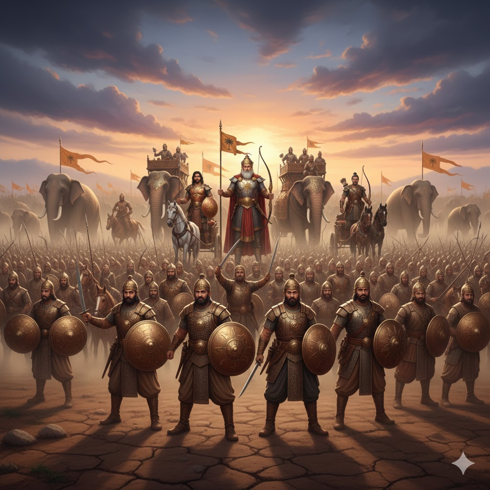

সরল ভাবার্থ
এছাড়াও আরও অনেক বীর আছেন যারা আমার জন্য প্রাণ উৎসর্গ করতে প্রস্তুত। তাঁরা সকলেই বিভিন্ন ধরণের মারণাস্ত্রে সজ্জিত এবং যুদ্ধবিদ্যায় পারদর্শী।
বিস্তারিত ধর্মীয় ব্যাখ্যা
দুর্যোধন তাঁর বীরদের সম্পর্কে অত্যন্ত আত্মবিশ্বাসের সাথে বলছেন যে তারা 'মদর্থে ত্যক্তজীবিতাঃ' অর্থাৎ আমার জন্য তারা প্রাণ দিতেও পিছপা হবে না। এই একটি বাক্যেই দুর্যোধনের চরম স্বার্থপরতা এবং কৌরব বীরদের করুণ পরিণতি ফুটে উঠেছে। ধর্মীয় দিক থেকে এটি এক মহান পরিহাস। দুর্যোধন দাবি করছেন যে তারা তাঁর জন্য প্রাণ দিতে প্রস্তুত, কিন্তু তিনি কি একবারও ভেবেছেন যে তিনি কার জন্য তাদের প্রাণ বিপন্ন করছেন? একটি অন্যায্য সিংহাসনের জন্য হাজার হাজার বীরের বলিদান—এটিই হলো অধর্মের স্বরূপ।
দুর্যোধনের এই কথাগুলো পরোক্ষভাবে একটি ভবিষ্যদ্বাণী। কুরুক্ষেত্রের যুদ্ধে কৌরব পক্ষের প্রায় সব বীরই শেষ পর্যন্ত প্রাণ হারিয়েছিলেন। তারা যুদ্ধবিশারদ ছিলেন, তাদের কাছে নানা উন্নত অস্ত্র ছিল, কিন্তু তাদের কাছে যা ছিল না তা হলো 'ধর্ম'। ভগবান শ্রীকৃষ্ণ পাণ্ডবদের পক্ষে থাকায় কৌরবদের সমস্ত অস্ত্রই শেষ পর্যন্ত ব্যর্থ প্রমাণিত হয়েছিল। মানুষের জীবনেও যখন আমরা ভুল আদর্শের জন্য লড়াই করি, তখন আমাদের সম্পদ, শিক্ষা বা বাহুবল কোনোটিই আমাদের রক্ষা করতে পারে না। দুর্যোধন মনে করছেন তাঁর সেনাপতিরা তাঁর প্রতি অনুগত, কিন্তু তিনি ভুলে গেছেন যে ন্যায়ের শক্তি কোনো ব্যক্তির চেয়েও বড়। এই শ্লোকটি আমাদের মনে করিয়ে দেয় যে, আমরা যেন কখনো এমন কোনো কাজে লিপ্ত না হই যেখানে অন্যকে আমাদের স্বার্থের জন্য প্রাণ বা সম্মান বিসর্জন দিতে হয়। ত্যক্তজীবিতা বা আত্মদান কেবল তখনই মহৎ হয় যখন তা সত্যের জন্য করা হয়, কোনো ব্যক্তির অহংকারের জন্য নয়।

[ছবি: কৌরব বাহিনীর অগণিত সৈন্য হাতে ঢাল ও তলোয়ার নিয়ে অশ্বারোহী ও হস্তিবাহিনীর সাথে সমবেত হয়ে যুদ্ধের হুংকার দিচ্ছে।]